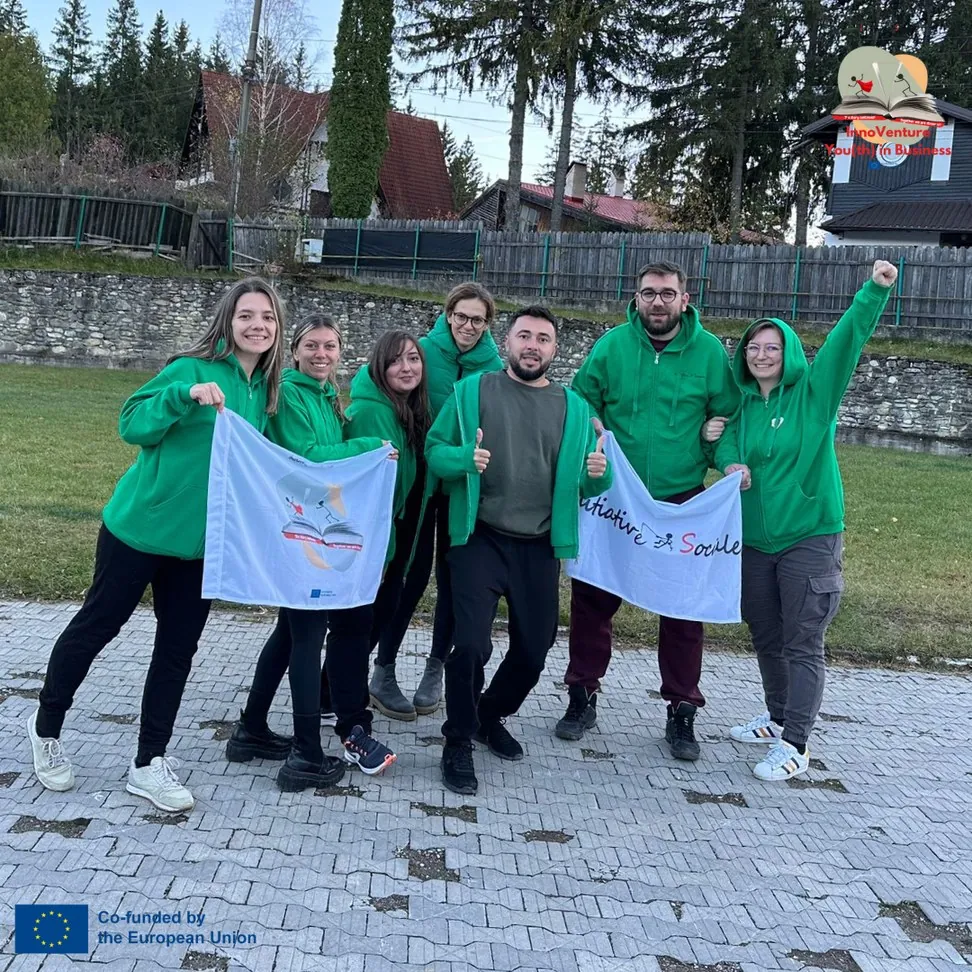
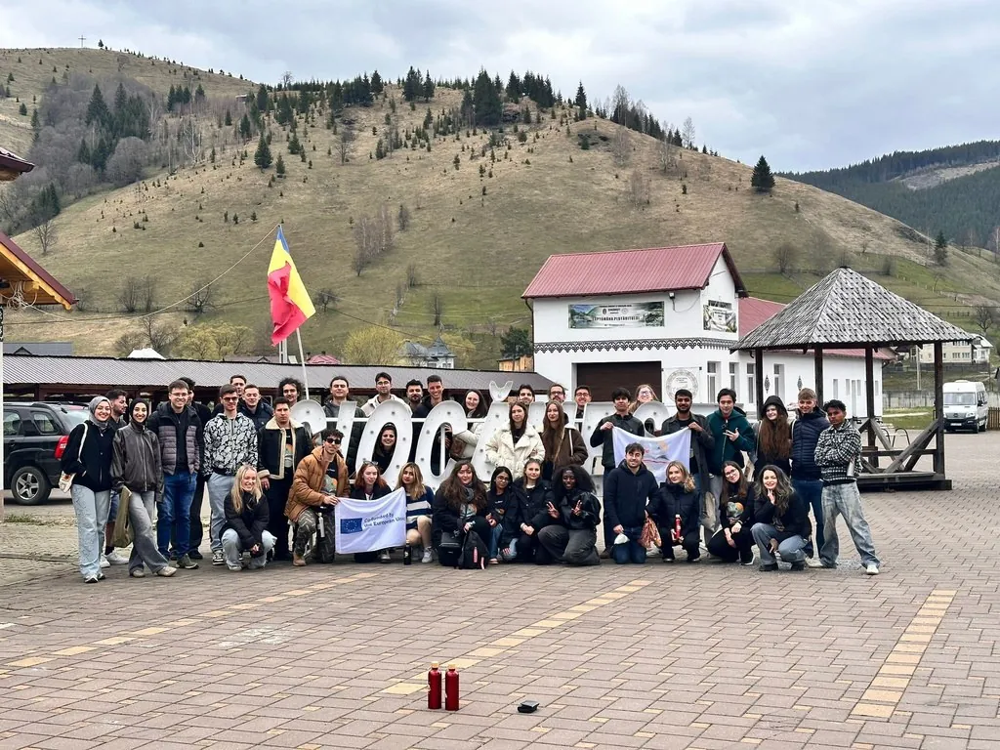
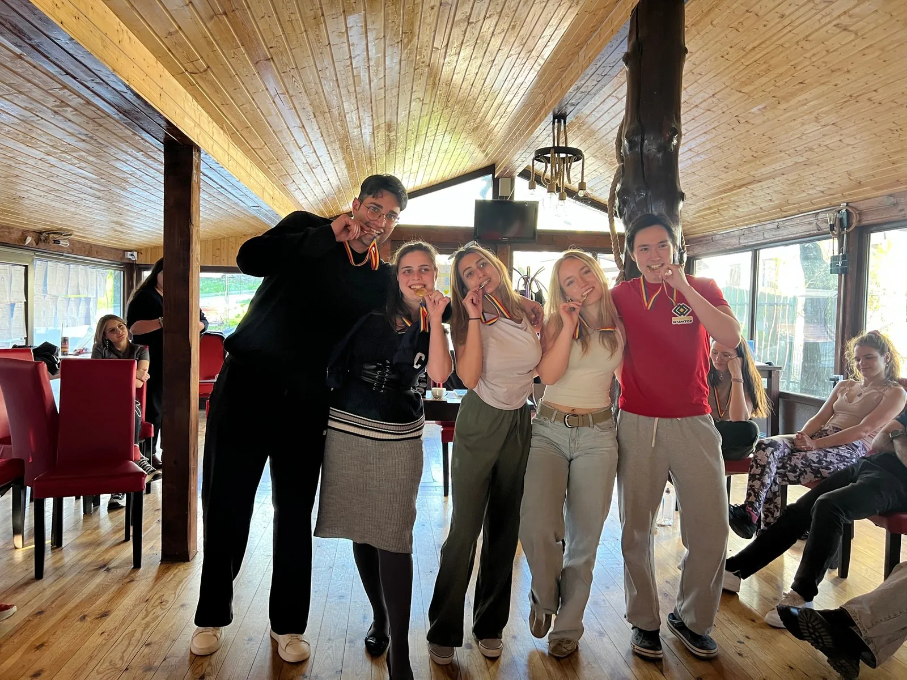

LevelUP · planning one's own path more consciously
Create Your Own Path
Create Your Own Path
No one can map out your path better than you. Here you were given the tools to plan it with courage.



APR 2026LevelUP
Description
In the third year, through LevelUP, AIS implemented activities dedicated to the community, career guidance and planning one's own path. Participants worked hands-on, collaborated in international teams and connected the Erasmus+ experience with local, community and professional realities.
Participants developed communication, teamwork, critical thinking, reflection, self-confidence, initiative, adaptability, intercultural cooperation and the ability to plan their educational and professional future more consciously.
The hands-on activities gave participants opportunities to learn through experience, collaboration, reflection and building confidence in their own abilities.
Through teamwork, discussions and guided reflection, participants strengthened their communication, adaptability, critical thinking and ability to connect learning with real situations.
- Dates
- 27 April – 7 May 2026
- Place
- Argestru, Vatra Dornei, Romania
- Theme
- Educational and professional planning
- Framework
- AIS Erasmus+ Accreditation
- Stage
- Year 3
- Programme
- LevelUP
- Erasmus+ project
- 2025-1-RO01-KA151-YOU-000299424
APR 2026From the project sheet
From Employee to Entrepreneur
people
countries
young participants
people travelled green
Employee or entrepreneur? What if you found out for yourself what suits you? From 27 April to 7 May 2026, AIS brought the youth exchange “LevelUP: Create Your Own Path” to Argestru, near Vatra Dornei – the seventh mobility of our Erasmus+ accreditation.
There were 42 of us from 7 countries (Hungary, Italy, Poland, Portugal, Romania, Serbia and Turkey): 33 young people, 7 group leaders and 2 facilitators. Inclusion and diversity came first, and 21 of us – half the group – travelled green, because the journey matters too.
The idea: young people discovering their potential, seeing more clearly where they want to go and exploring what it means to get hired or to create your own job. Nine days of workshops, simulations, debates, role play, daily reflections and teamwork in international teams.
Each country showed what jobs and entrepreneurship look like back home. Then we took a look in the mirror: the RIASEC test to see what suits us, a SWOT analysis, an “Elevator Pitch” in a few seconds and “Personal Branding & Marketing” workshops.
In “Let’s Get Down to Business” and “Create Your Own Path” it got serious: we negotiated, made decisions, developed ideas and created and tested educational resources, with roles and deadlines just like a real team.
We also got out of the room: study visits and meetings with people from local government and business, to see what opportunities exist right here in Vatra Dornei. Intercultural evenings, partner presentations and sessions on Erasmus+ and Youthpass rounded it all off.
Together, the young people created resources anyone can use:
- 7 presentations on jobs and entrepreneurship in each country.
- 1 digital flipbook, “From Employee to Entrepreneur”, about the journey from employee to entrepreneur.
- 4 podcast episodes in two series: employability and entrepreneurship.
- 4 board games built around real work challenges.
- 2 Career Pathways Maps: one for employment, one for entrepreneurship.
- 1 social media campaign, 4 video teasers and materials about the partner organisations.
On top of that: presentations, testimonials and 7 national reports. You can find everything on the LevelUP blog and on our partners’ pages.
Along the way, the participants practised communication, creativity, critical thinking, entrepreneurial thinking, leadership, career planning, teamwork and digital tools. Through daily reflections and Youthpass, everyone could see and recognise what they had learned.
AIS coordinated everything together with the 6 partner organisations. We prepared the participants in advance, held coordination meetings, asked for feedback at the start, halfway and at the end, and adapted our methods to how the group was doing.
And we made sure everyone felt safe, included and supported – in exactly the way they needed.
At the end, 40 participants told us how it went. In short: it was worth it.
- 4.80 out of 5 – their score for the Erasmus+ experience.
- 4.38 out of 5 – how much it helped them grow personally.
- 92.5% (37 of 40) felt they had changed for the better.
- 100% (40 of 40) say the RIASEC test helped them know themselves better.
- 100% (40 of 40) present themselves with more confidence after the “Elevator Pitch”.
- 97.5% (39 of 40) found the “Personal Branding & Marketing” workshop useful.
- 95% (38 of 40) see their career path more clearly with the “Career Pathways Map”.
- 100% (40 of 40) want to take part in projects like this again.
The group leaders saw the difference too: more communication, cooperation, independence and self-confidence. They also gave us good advice on the pace of the sessions and breaks, which we’re taking with us. Our partners gave us 4.83/5 for working with AIS and 4.67/5 for the educational programme – and all 6 organisations want to keep going together.
We asked the participants to rate themselves before and after the mobility. The difference shows:
- 3.50/5 – the average score before.
- 4.25/5 – the average score after.
- +0.75 points – an increase of 21.4%.
- 97.5% (39 of 40) say “Create Your Own Path” motivated them to take action on their goals.
- 65% (26 of 40) made international contacts for future collaborations.
In short: the young people know themselves better, present themselves more confidently, have more courage to start something of their own and know more clearly what their next career steps are.
Back home, the participants passed the story on: 7 sessions in the 7 countries, with around 96 attendances – 6 face-to-face meetings and one online workshop.
- Romania: in Luna, Cluj County, on 5 June 2026, 8 young people discovered the “From Employee to Entrepreneur” flipbook.
- Poland: 11 students at the “Bolesław Chrobry” High School in Kłodzko on 5 June 2026, on non-formal education, Erasmus+ and career planning.
- Hungary: an outdoor workshop on Margaret Island, Budapest, on 20 June 2026, with SWOT and personal branding for 14 students and mentors.
- Italy: around 30 people at the “Spazio Rimediato” theatre in L’Aquila on 11 May 2026, where entrepreneurship and Erasmus+ were presented through theatre.
- Portugal: 11 scouts in Aveiro on 23 May 2026, on what we learned, the intercultural experience and how to join an Erasmus+ project.
- Serbia: an interactive workshop for 8 young people keen on entrepreneurship and personal and professional development, at the partner organisation’s office.
- Turkey: an online workshop on Google Meet on 23 May 2026, with 14 participants, the podcasts, the videos and Erasmus+ opportunities.
And AIS presented the results of A5, A6 and A7 together at the “Hristo Botev” Bulgarian High School in Bucharest (52 students, 16 June 2026) and at AHA Center, also in Bucharest (16 participants, 10 July 2026).
Create Your Own Path was about courage: 42 people from 7 countries, half of them travelling green, a flipbook, 4 podcasts, 4 games, scores 21.4% higher after the mobility and 4.80/5 for the whole experience.
And it contributed to all four goals of our accreditation: entrepreneurship and inclusion, skills for employment, a stronger organisation and more international cooperation. The story continues! Together we are stronger!
The story continues! Together we are stronger!